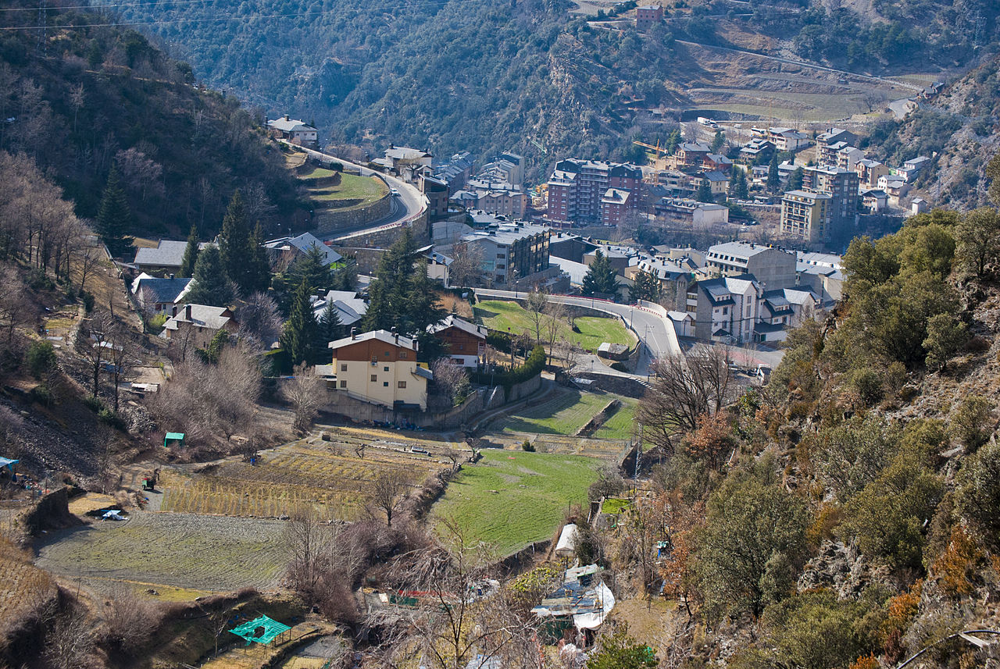

Sant Julià de Lória
- Naturlandia
-
Jardines de Juberri
- Os de Civís

De camino a Naturlandia, en el Pueblo de Juberri, podéis encontrar los Jardines de Juberri. Se trata de un jardín contemporáneo situado en un entorno 1250 metros de altitud, en el que además de poder disfrutar de las vistas del valle,
podréis recorrer un itinerario repleto de esculturas que se integran con la naturaleza pirenaica, como manos que rodean a los árboles, animales, o saltos de agua, o arbústos de formas perfectas con inspiración francesa.